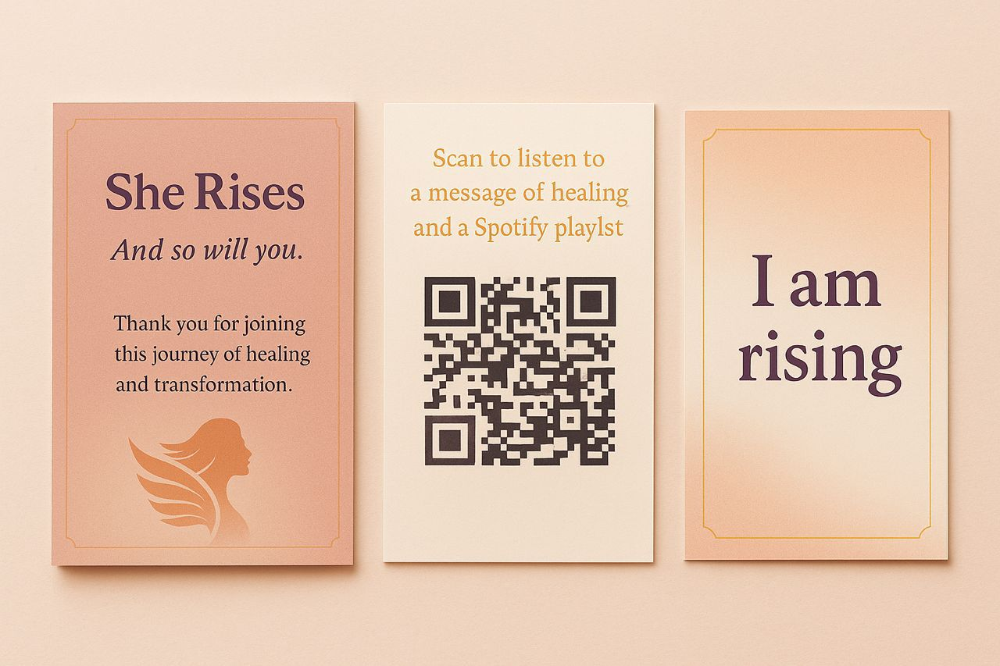

She Rises Summit is more than just a gathering, it is a movement created to bring women together in a world where many silently carry pain, pressure, loneliness, self-doubt, and the weight of becoming.
She Rises was born from the belief that no woman should have to navigate life alone. Every woman deserves a safe space to be seen, heard, supported, inspired, and empowered.
The summit exists to create a true sisterhood, a gathering of women from different walks of life coming together to grow, heal, connect, learn, and rise together. It is a space where women hold each other’s hands instead of competing, where stories become strength, and where one woman’s courage inspires another woman’s transformation.
At She Rises: from trauma to transformation, we are passionate about women’s development, inclusion, emotional healing, leadership, purpose, confidence, faith, creativity, entrepreneurship, and creating opportunities for women to thrive in every area of life.
Each year, the summit brings together passionate women, leaders, creatives, entrepreneurs, change-makers, and young women for meaningful conversations, impactful experiences, networking, mentorship, empowerment sessions, and genuine connection. Because we believe that when women come together intentionally, powerful things happen.
Women discover their voice. Women rediscover themselves. Women build confidence. Women find community. Women feel less alone. Women rise.
Inspiring keynote conversations Empowerment and healing sessions Networking and meaningful connections Leadership and personal development discussions Entrepreneurship and business conversations Creative expression, fashion, and lifestyle experiences Mentorship opportunities A safe and uplifting atmosphere for women to grow together
The She Rises Summit is not just an event people attend and forget. It is an experience. A community. A safe space. A reminder that becoming is possible. Because when one woman rises, she gives another woman permission to rise too.